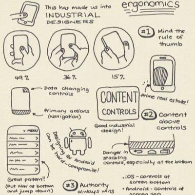
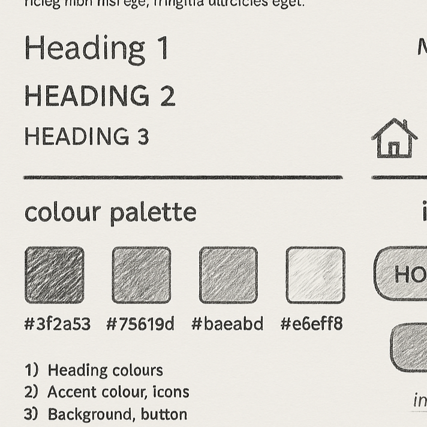
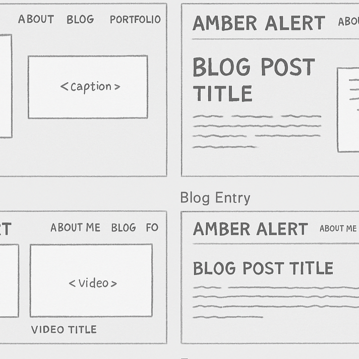

My Design Process
Title: Week 5 & 6 - IxD Process
Date: March 17, 2025
Read more →My Style Guide
Title: Getting Started
Date: March 17, 2025
Read more →My Wireframe
Title: Getting Started
Date: March 17, 2025
Read more →Title: Week 5 & 6 - IxD Process
Date: March 17, 2025
Read more →Title: Getting Started
Date: March 17, 2025
Read more →Title: Getting Started
Date: March 17, 2025
Read more →